6. Arrangement View
The Arrangement View is one of Live’s two main views for song structuring and composition. In contrast to Session View, which centers around improvisation, looping, and clip launching, the Arrangement View lets you combine and arrange different elements of a song on a linear timeline. The complete layout of a song or project is referred to as the Arrangement.
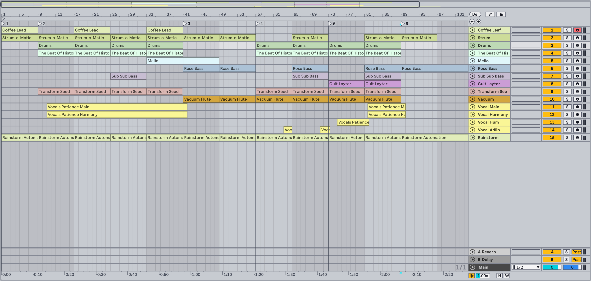
6.1 Layout
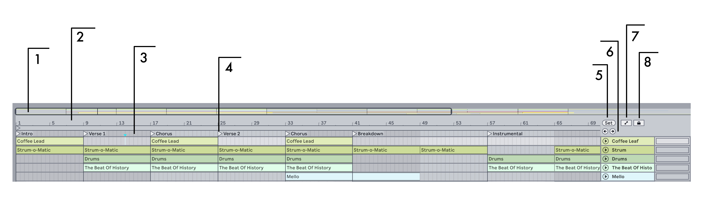
- The Overview displays the Arrangement’s entire layout of clips from start to end and can be used for zooming and navigation. The black outline represents the currently displayed part of the Arrangement. You can click and drag horizontally to scroll left or right, or click and drag vertically to zoom in or out. To zoom out to the full Arrangement, double-click anywhere within the black outline.
- In the beat-time ruler, time is displayed in bars-beats-sixteenths. Clicking and dragging in this area works the same way as in the Overview: drag left or right to scroll through the timeline, or drag vertically to zoom. Double-clicking in the beat-time ruler zooms in to the current selection. If nothing is selected, double-clicking the beat-time ruler zooms out to show the entire Arrangement.
- Clicking anywhere in the scrub area launches playback from that point. You can also hold the left mouse button down over a point in the scrub area to loop playback for that area based on the current global launch quantization value.
- Locators can be added to any point in the scrub area to trigger playback for multiple areas of the Arrangement. This is useful for organizing a piece into launchable sections.
- Use the Set Locator button to add locators to the scrub area during playback or while recording. When a locator is selected, the Set Locator button becomes the Delete Locator button, which can be used to remove locators.
- The Previous and Next Locator buttons launch playback for locators. The jump between triggered locators is quantized based on the global launch quantization value.
- Use the Automation Mode toggle to show or hide automation lanes.
- The Lock Envelopes toggle can be used to lock envelopes to the song position rather than to clips. This lets you move clips without moving automation envelopes.
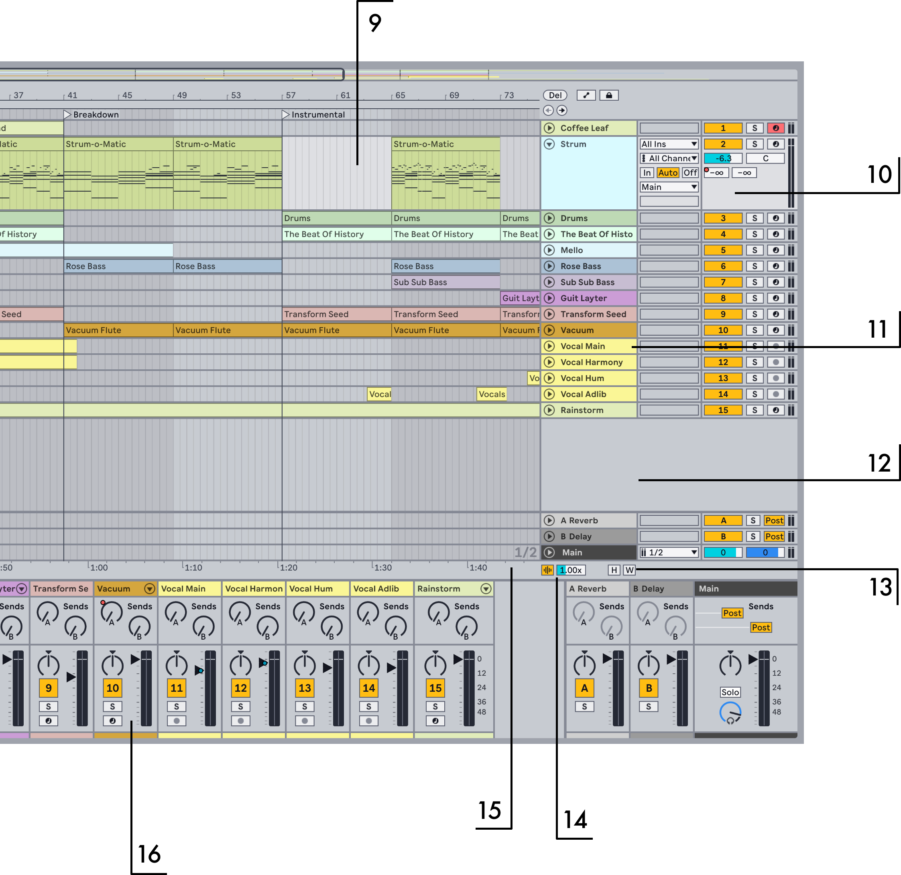
- Clips are contained and arranged in a track’s main lane. When using the comping workflow, you can add clips from various take lanes into the main lane.
- Volume, panning, I/O, and additional mixer controls are available via the Arrangement Track Controls. You can customize which controls are shown using the Arrangement Track Controls submenu in the View menu.
- In the Arrangement View, tracks are stacked vertically. Tracks can be reordered by selecting and dragging them above or below other tracks.
- You can add new tracks to the Arrangement by dragging instruments and devices into the Mixer Drop Area underneath tracks. Adding instruments or MIDI effects to this area will create a MIDI track, while adding audio effects will create an audio track.
- The Optimize Height and Optimize Width toggles can be used to fit all tracks into the current height or width of the Arrangement. You can also use the corresponding keyboard shortcuts H and W.
- You can enlarge the waveform display in audio clips using the Waveform Vertical Zoom Level slider. This is useful for highlighting transients and waveform details without having to adjust the clip gain. The zoom level is applied to all audio tracks in the Arrangement, as well as new clips as they are recorded.
- In the time ruler, time is displayed in minutes-seconds-milliseconds. You can click and drag in the time ruler to scroll left or right.
- You can open the mixer in Arrangement View via the Mixer option in the View menu or by using the Mixer View toggle in the bottom right corner of Live’s window.
6.2 Navigation and Zooming
In addition to some of the options described in the Layout section, the following navigation and zooming methods are also available:
- To zoom in and out around the current selection progressively, use the + and - keys, or scroll with the mouse wheel or trackpad while holding Ctrl (Win) / Cmd (Mac). You can pan the display by clicking and dragging while holding the CtrlAlt (Win) / CmdOption (Mac) modifier.
- To zoom in the current selection completely, press Z or use the Zoom to Arrangement Time Selection command in the View menu. You can revert to the previous zoom state by pressing the X key. Note that when zooming in multiple times using the Z key, the X key can be pressed multiple times to go back one step each time the key is pressed.
- If you select time on a clip in the Arrangement, the editor in the Clip View will zoom in on that selected time as well.
- To vertically zoom a selected track, scroll inside a track’s main lane with the mouse wheel or trackpad while holding the Alt (Win) / Option (Mac) modifier. Note that if the Arrangement contains a time selection, all tracks with selected content will zoom vertically.
- To have the Arrangement display follow the song position and scroll automatically, turn on the Follow switch in the Control Bar, or use the Follow command from the Options menu. Follow will pause if you make an edit or scroll the view horizontally in the Arrangement, or if you click on the beat-time ruler. Follow will start again once you stop or restart playback, or click in the Arrangement or clip scrub area.

6.3 Transport and Playback
The transport controls in the Control Bar trigger playback of the Arrangement.
You can click the Play button to start playback; to stop playback, click the Stop button. Alternatively, you can use the space bar to toggle playback on or off.
It is also possible to map computer keyboard keys or MIDI messages to the transport controls, which lets you set up a specific configuration for triggering playback as needed.
The flashing blue insert marker on a track determines where playback starts. By default, the marker is at the start of the Arrangement. You can click anywhere within a track to move the insert marker and set a new play position. To return the insert marker to the starting play position, you can double-click the Stop button or press the Home key (Win) or Function + left arrow key (Mac).
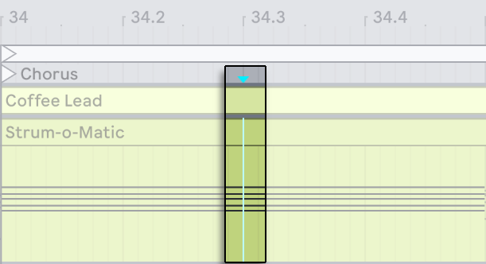
To continue playback from where it last stopped, rather than from the insert marker, hold Shift while pressing the space bar.
The play position is also accessible via the Control Bar’s Arrangement Position fields.
The Arrangement Position fields show the play position in bars-beats-sixteenths. When one of the fields is selected, the value can be adjusted using a few different methods: - Use the mouse to adjust the value by dragging up or down. - Type a number and then press Enter. - Use the up and down arrow keys to increase or decrease the value.
Adjusting the Arrangement Position fields automatically moves the insert marker.
You can also launch playback using the scrub area above the tracks. By default, the Permanent Scrub Areas option is enabled in Live’s Display & Input Settings, which lets you click anywhere in the scrub area to start playback from that point.
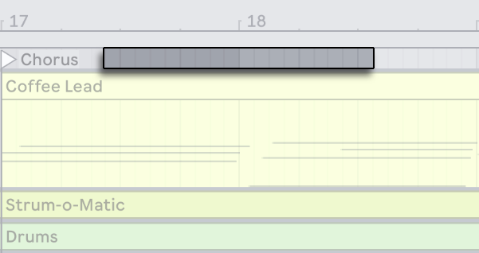
When clicking between different points in the scrub area, the jump between triggered play positions is quantized based on the Quantization Menu’s value in the Control Bar. You can also hold the left mouse button down on a specific point in the scrub area to play a repeated portion of the Arrangement based on the global launch quantization value.
Even if the Permanent Scrub Areas option is switched off, you can still scrub through the Arrangement by Shift-clicking anywhere in the scrub area or in the beat-time ruler.
The editor in the Clip View also has its own scrub area in individual clips that can be used to trigger playback.
To ensure that MIDI notes play even if playback starts after the beginning of a note, Live will chase MIDI notes by default. You can also deactivate or reactivate this behavior using the Chase MIDI Notes command in the Options menu.
6.4 Launching the Arrangement with Locators
To set up multiple locations in the Arrangement for triggering playback, you can add launchable locators to the scrub area.
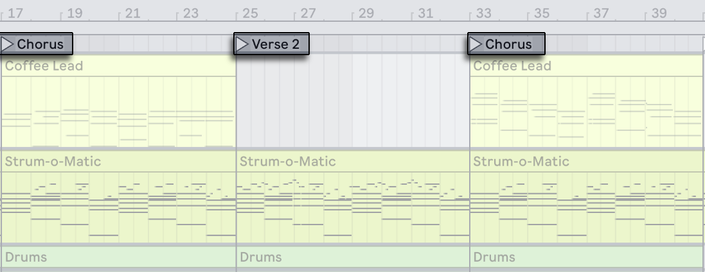
The Set Locator button can be used to add locators to any part of the Arrangement in real time during playback or when recording. Locators are quantized according to the global launch quantization value set in the Control Bar.
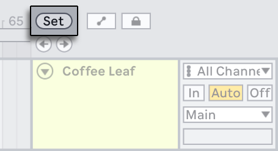
If you use the Set Locator button while transport is not running, a locator will be added at the insert marker location or at the start of the time selection. You can also set locators using the Add Locator option in the scrub area’s context menu or via the Create menu.
Note that when locators are added to the Arrangement, the Set Locator button becomes the Delete Locator button for any selected locators.
You can jump to locators by clicking on them or by using the Previous and Next Locator buttons below the Set button. After jumping to the first or last locator in the Arrangement, the Previous and Next Locator buttons will jump to the Arrangement start or end, respectively.
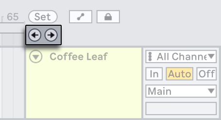
Locators can also be triggered using MIDI/key mapping. If the transport is stopped, double-clicking on a locator will select it and start playback from that point.
Selected locators can be moved by clicking and dragging or by using the arrow keys. You can rename selected locators using the Rename option in the Edit menu or the shortcut CtrlR (Win) / CmdR (Mac). You can also enter your own info text descriptions for locators via the Edit Info Text option in the Edit menu or the locator’s context menu. To delete a locator, use the Delete key, the Delete Locator option in the Create menu, or the Delete Locator button.
The Loop to Next Locator command in a locator’s context menu offers a quick way of looping playback between two locators. The Set Song Start Time Here command can be used to overrule the default “playback starts at selection“ behavior: when this command is checked, playback starts at the locator instead.
6.5 Time Signature Changes
Live’s time signature can be changed at any point in the Arrangement using time signature markers. To add a marker at the current insert marker position, use the Insert Time Signature Change command via the Create menu or the scrub area’s context menu.
Any time signature with a one- or two-digit numerator and a denominator of 1, 2, 4, 8 or 16 can be used as a value for a marker. The numbers must be separated by a delimiter such as a slash, comma, period, or any number of spaces.
You can also type or adjust time signature values using the Time Signature Numerator and Denominator fields in the Control Bar. This will change the time signature at the current play location, and works either with the transport stopped or during playback.
When the Arrangement contains time signature changes, the time signature fields show an automation LED in the upper left corner.
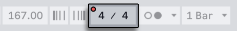
Time signature markers appear just below the beat-time ruler. Note that this marker area is hidden if a Set contains no meter changes.
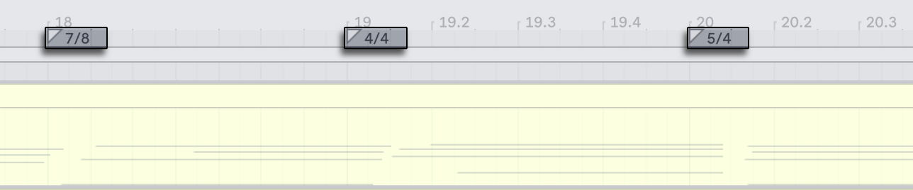
Time signature markers can be moved with the mouse or left and right arrow keys. You can edit the time signature values for selected markers via the Edit Time Signature command in the Edit menu or the scrub area’s context menu, or by using the shortcut CtrlR (Win) / CmdR (Mac). To delete a time signature marker, use the Delete key or the Delete command in the Edit menu.
Time signature markers are not quantized; they may be placed anywhere in the timeline, and their positioning is only constrained by the editing grid. This means that it is possible to place meter changes in “impossible“ places — such as before the end of the previous measure. Doing so creates a fragmentary bar, which is represented in the scrub area by a crosshatched region. Live is happy to leave these incomplete measures as they are, but if you’d like your Set to conform to the rules of music theory, you can choose one of the context menu options for “correcting“ incomplete bars.
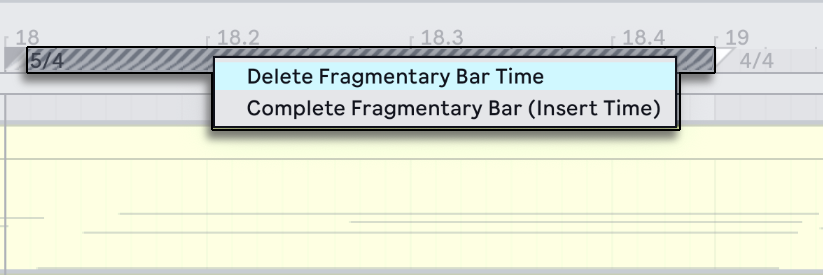
Delete Fragmentary Bar Time deletes the duration of the fragmentary bar from the Arrangement, thereby moving any audio or MIDI clips on either side of the deleted area closer together in the timeline. The next time signature marker will now fall on the expected barline.
Complete Fragmentary Bar inserts time at the beginning of the fragmentary bar, so that it becomes complete. The next time signature marker will now fall on the expected barline.
Please note that both of these options affect all tracks — deleting and inserting time changes the length of the entire Arrangement.
When importing a MIDI file into the Arrangement, you’ll be given an option to import any time signature information that was saved with the file. If you choose to do this, Live will automatically create time signature markers in the correct places. This makes it very easy to work with complex music created in other sequencer or notation software.
6.6 The Arrangement Loop
To repeatedly play a section of the Arrangement, activate the Arrangement Loop using the toggle in the Control Bar.
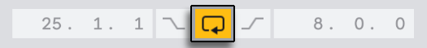
If no clip(s) or time is selected, the loop brace will cover the entire Arrangement. You can set the loop length numerically using the Loop Start and Loop Length fields in the Control Bar, which determine the loop start position and loop length, respectively.
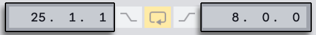
The Loop Selection command in the Edit menu can be used to turn on the Arrangement loop and set the loop brace to the current time selection. The corresponding shortcut for this command is CtrlL (Win) / CmdL (Mac), which can also be used toggle the Arrangement loop on or off when a clip or time is selected.
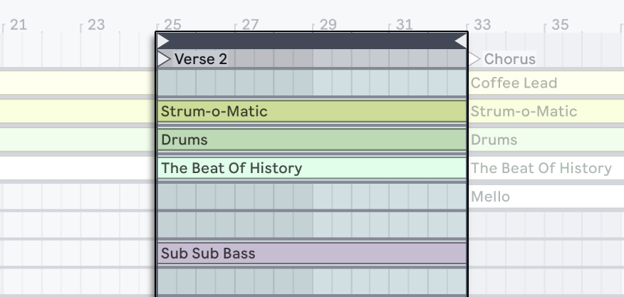
The loop brace can be adjusted using the following keys and commands:
- The left and right arrow keys nudge the loop brace to the left or right based on the current grid settings.
- The up and down arrow keys shift the loop brace left or right in steps based on the loop brace length.
- Ctrl (Win) / Cmd (Mac) + the left and right arrow keys shortens or lengthens the loop by the current grid settings.
- Ctrl (Win) / Cmd (Mac) + the up and down arrow keys doubles or halves the loop length.
You can also drag the loop brace: dragging from the left or right edge adjusts the loop start/end points, while dragging the brace bar horizontally moves the loop without changing its length.
To trigger playback from the loop brace’s starting point, enable the Set Song Start Time Here command in the brace’s context menu. This command overrules the default behavior, which triggers playback at the insert marker or active time selection.
6.7 Moving and Resizing Clips
A piece of audio or MIDI is represented in the Arrangement View by a clip sitting at some song position in one of Live’s tracks.
Dragging a clip moves it to another song position or track.
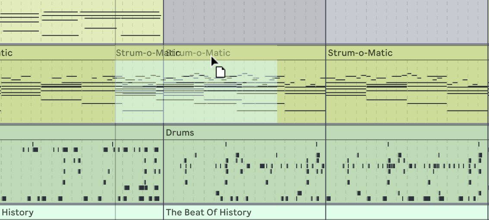
Dragging a clip’s left or right edge changes the clip’s length.
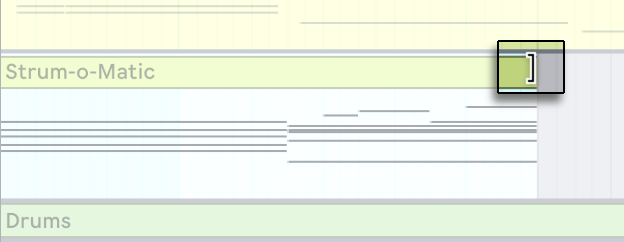
Note that only the clip bar is draggable, it is not possible to drag from the clip’s waveform or MIDI display.
Clips snap to the editing grid, as well as various objects in the Arrangement including the edges of other clips, locators and time signature changes.
To slide the contents of a warped audio clip or a MIDI clip within the clip’s boundaries, hold CtrlShift (Win) / ShiftOption (Mac) while dragging the clip’s waveform or MIDI display. To bypass grid snapping, hold down CtrlAltShift (Win) / CmdOptionShift (Mac) while dragging the clip’s contents.
6.8 Audio Clip Fades and Crossfades
The beginning and end of audio clips in the Arrangement View have adjustable volume fades. Additionally, adjacent clips on the same audio track can be crossfaded.
Fade controls are located at the edges of audio clips, provided that the tracks are expanded enough for the fade handles to be visible. If a track is folded or too small, you can adjust the height of the track until the handles appear.
You can hover over an audio clip to access the fade handles, which initially appear as small squares at the clip’s edges.
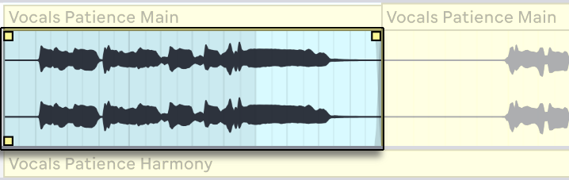
If Automation Mode is enabled, you can momentarily toggle the fade controls by holding the F key while hovering over an automation lane.
The Fade In Start and Fade Out End handles let you change the duration of a fade in or fade out without affecting the fade peaks. However, fade edges cannot move beyond fade peaks. You can select one of the handles and drag it out across the clip to change the length of the fade. You can further adjust the fade’s intensity using the Fade Curve handle, which shapes the curve of the fade.
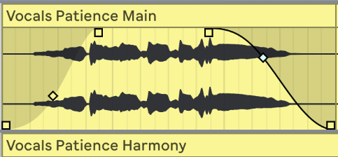
You can also set the length of a fade by selecting a range of time within the clip that includes the clip’s beginning or end and executing the Create Fade In/Out command in the Create menu or using the shortcut CtrlAltF (Win) / CmdOptionF (Mac).
Adjacent audio clips can be crossfaded. Creating and editing crossfades is similar to creating and editing start and end fades:
- Click and drag a fade handle over the adjacent clip’s edge to create a crossfade.
- Click and drag the slope handle to adjust the shape of the crossfade’s curve.
- Select a range of time that includes the boundary between the adjacent clips and execute the Create Crossfade command from the Create menu.
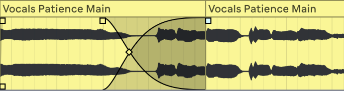
Selecting a fade handle and pressing the Delete key deletes the fade, unless the Create Fades on Clip Edges option is enabled in the Record, Warp & Launch Settings. In this case, pressing Delete returns the fade handle to a default length of 4 ms. These default fades help prevent pops or clicks at clip edges.
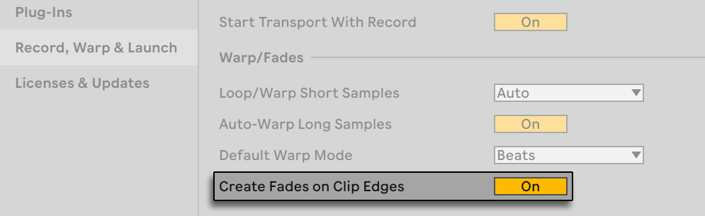
Another result of enabling the Create Fades on Clip Edges option is that adjacent audio clips will automatically get 4 ms crossfades. These can then be edited just like manually-created crossfades.
There are some limits to the length of fades and crossfades:
- Fades cannot cross a clip’s loop boundaries.
- A clip’s start and end fades cannot overlap each other.
When a fade handle is selected, a dotted black line will appear on the relevant clip to indicate the limit for that handle. This is especially useful when editing crossfades, because one clip’s loop boundary may be hidden under the other clip.
Note that fades are a property of clips rather than the tracks that contain them, and are independent of automation envelopes.
6.9 Selecting Clips and Time
Apart from moving and resizing clips, Arrangement editing is selection-based: you select something and then execute a command (e.g., Cut, Copy, Paste, Duplicate) on the selection.
Here is how selection works:
- Clicking a clip selects the clip.
- Clicking into the Arrangement background selects a point in time, represented by a flashing insert marker. The insert marker can then be moved in time with the left and right arrow keys, or between tracks via the up and down arrow keys. Holding Ctrl (Win) / Option (Mac) while pressing the left and right arrow keys snaps the insert marker to locators and the edges of clips in the selected track or tracks.
- Clicking and dragging selects a timespan.
- To access the time within a clip for editing, unfold its track by clicking the button next to the track name. Note that selected tracks can also be unfolded by pressing the U key. You can adjust the height of the unfolded track by dragging the split line below the Unfold Track button, or by using the Alt+ (Win) / Option+ (Mac) and Alt- (Win) / Option- (Mac) shortcut keys. You can also resize the height of a track by pressing Alt (Win) / Option (Mac) while using a pinch gesture on a supported trackpad or touchscreen. To resize all tracks in the Arrangement View at once, hold Alt (Win) / Option (Mac) while resizing a single track. You can also unfold all of your tracks at once by holding down the Alt (Win) / Option (Mac) modifier when clicking the button, or by using the AltU (Win) / OptionU (Mac) shortcut.
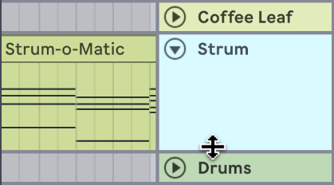
- Clicking and dragging in the clip’s waveform or MIDI display allows you to select time within the clip.
- Clicking on the loop brace is a shortcut for executing the Edit menu’s Select Loop command, which selects all material within the loop.
- Holding Shift while clicking extends an existing selection in the same track or across tracks. You can also hold Shift and use the arrow keys to extend or shorten the selection.
- Pressing the 0 key deactivates a selection of material, even if it contains multiple clips. Note that pressing the 0 key while a track header is selected will deactivate that track.
- It is possible to reverse a selection of audio material, even if it contains multiple audio clips. To do this, select the range of time you want to reverse, and choose the Reverse Clip(s) command from the clip’s context menu or press the R shortcut key. Note that it isn’t possible to reverse a selection that contains MIDI clips.
- You can nudge a selection of material using the left and right arrow keys.
6.10 Using the Editing Grid
To ease Arrangement editing, the cursor will snap to grid lines that represent the meter subdivisions of the song tempo. The grid can be set to be either zoom-adaptive or fixed.
You can set the width of both zoom-adaptive and fixed grid lines using the context menu available in either the Arrangement View track main lanes or the MIDI Note Editor in the Clip View.
The following shortcuts, also available as Options menu commands, allow you to quickly adjust the grid:
- Ctrl1 (Win) / Cmd1 (Mac) narrows the grid, doubling the density of the grid lines (e.g., from eighth notes to sixteenth notes).
- Ctrl2 (Win) / Cmd2 (Mac) widens the grid, halving the density of the grid lines (e.g., from eighth notes to quarter notes).
- Ctrl3 (Win) / Cmd3 (Mac) toggles triplets mode; this would, for instance, change the grid from eighth notes to eighth note triplets.
- Ctrl4 (Win) / Cmd4 (Mac) turns grid snapping on or off. When the grid is off, the cursor does not snap to meter subdivisions.
- Ctrl5 (Win) / Cmd5 (Mac) toggles fixed and adaptive grid modes.
The current spacing between adjacent grid lines is displayed above the time ruler in the lower right corner of the Arrangement View.
You can hold down the Alt (Win) / Cmd (Mac) modifier while performing an action to bypass grid snapping. If the grid is switched off, using the modifier will temporarily enable it.
6.11 Using the …Time Commands
Whereas the standard commands like Cut, Copy and Paste only affect the current selection, their “… Time“ counterparts act upon all tracks by inserting and deleting time. This means that adding time inserts the selected time across all tracks in the Arrangement, while removing time deletes the selected time across all tracks. Any time signature markers within the selected region will also be affected.
- Cut Time cuts a selection of time from the Arrangement, thereby moving any audio or MIDI clips on either side of the cut area closer together in the timeline. This command reduces the length of your Arrangement by whatever amount of time you have cut.
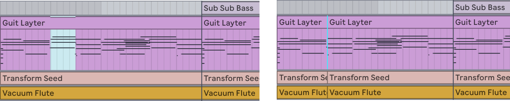
- Paste Time places copied time into the Arrangement, thereby increasing its overall duration by the length of time you have copied.
- Duplicate Time places a copy of the selected timespan into the Arrangement, thereby increasing its overall duration by the length of the selection.
- Delete Time deletes a selection of time from the Arrangement, thereby moving any audio or MIDI clips on either side of the deleted area closer together in the timeline. This command reduces the length of your Arrangement by the amount of time you have deleted.
- Insert Silence inserts a chosen amount of empty time into the Arrangement starting at the insert marker.
6.12 Splitting Clips
The Split command divides a clip into individual parts, which is useful for isolating certain areas of one clip into its own separate clip, or breaking down one clip into multiple parts.
You can click anywhere within a clip’s waveform or MIDI display and then use the shortcut CtrlE (Win) / CmdE (Mac) or the Split context menu option to divide the clip at that location. The newly split clip will have its own clip edges and can be moved or edited like any other clip.
You can also isolate a specific portion within a clip by dragging over the desired area of the clip’s waveform or MIDI display and then using the same shortcut or context menu option to separate out that selection into a new clip.
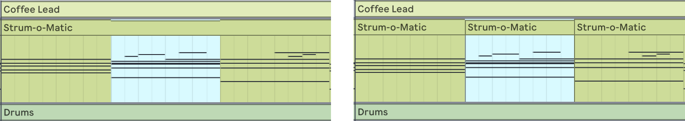
6.13 Consolidating Clips
The Consolidate command combines selected material from several adjacent clips into one new clip. The command can be applied to clips per track or to adjacent clips across multiple tracks in the Arrangement. Consolidating clips is a good way to join material from several clips into a new loop.
For example, if you have a set of clips that sound good in Arrangement Loop mode that you want to combine into a loop, you can select your desired clips and then use the Consolidate command in the Edit menu or main lane context menu, or use the shortcut CtrlJ (Win) / CmdJ (Mac).
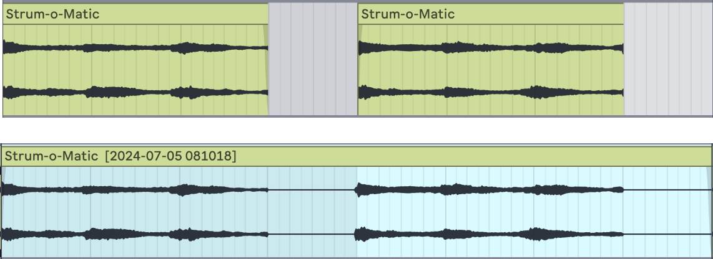
The consolidated clip can be now treated like any other clip; you can for instance, move the clip to a new position in the Arrangement, or drag MIDI clip edges to create more repetitions.
When consolidating audio clips, a new sample is created for every track in the selection. These samples are essentially recordings of the time-warping engine’s audio output, prior to processing in the track’s effects chain and mixer. Hence, the samples incorporate the effects of in-clip attenuation, time-warping and pitch shifting, and of the respective clip envelopes, however, they do not incorporate the effects. If you want to create a new sample from the post-effects signal, use the Export Audio/Video command to export a specific selection of clips into one audio file.
Consolidated samples can be found in the current Set’s Project folder, under Samples/Processed/Consolidate. If the Set has not yet been saved, consolidated samples are stored at the location specified by the Temporary Folder.
6.14 Linked-Track Editing
Linked-track editing makes it possible to use the comping workflow and other phase-locked editing operations on multiple tracks at once.
6.14.1 Linking and Unlinking Tracks
Selected tracks can be linked by using the Link Tracks command in the track header’s context menu.
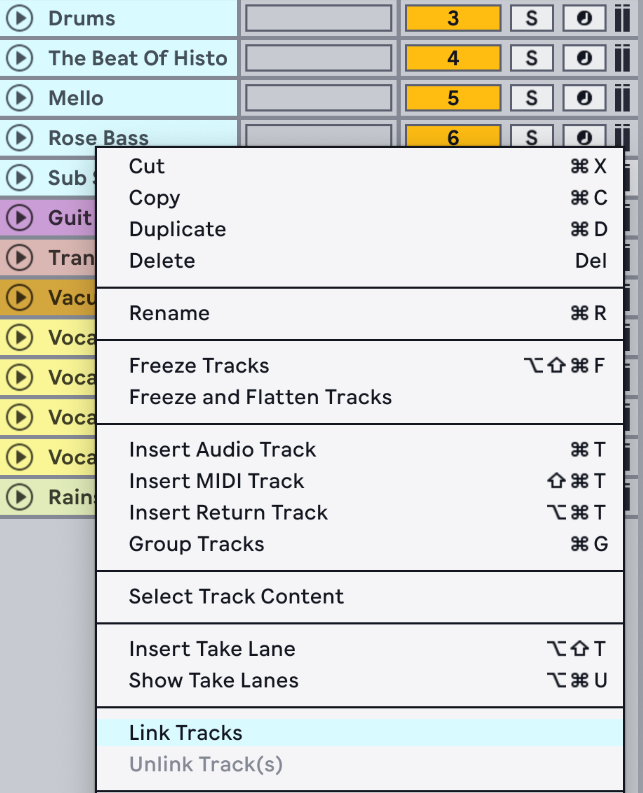
It is also possible to link tracks in a Group Track by opening the Group Track header’s context menu and using the Link Tracks command.
Linked tracks display a linked-track indicator button in the track headers.
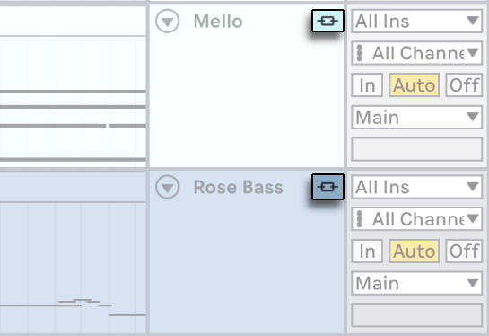
Note that you can create multiple instances of linked tracks in a Set, however each track can only belong to one of these instances.
Hovering over a track’s linked-track indicator highlights the tracks that are linked together. This can be especially useful for identifying multiple instances of linked tracks. Clicking on a track’s linked-track indicator selects all tracks that are linked together.
You can add tracks to an existing instance of linked tracks by first selecting the tracks you want to add, then holding Ctrl (Win) / Cmd (Mac) and using the Link Tracks command in one of the existing linked track header’s context menu.
Any subset of linked tracks, or a mix of linked and unlinked tracks, can be linked together by selecting their track headers and clicking the Link Tracks context menu command.
To remove tracks from an instance of linked tracks, select the tracks you want to unlink and use the Unlink Track(s) option in the track or Group Track header’s context menu.
6.14.2 Editing Linked Tracks
Once you have created an instance of linked tracks, the following operations can be applied to all tracks simultaneously:
- Moving and resizing clips.
- Selecting clips and time.
- Using the “… Time” commands.
- Splitting and consolidating clips.
- Creating and editing audio clip fades. Only clip fades that start at the same time position can be adjusted simultaneously.
- Arming and disarming tracks.
- Renaming, inserting, and deleting take lanes, as well as enabling and disabling Audition Mode on take lanes. This also applies when take lanes are hidden in some linked tracks.
6.15 The Mixer in Arrangement View
There are two sets of mixer controls available in the Arrangement View: the mixer and the Arrangement track controls.
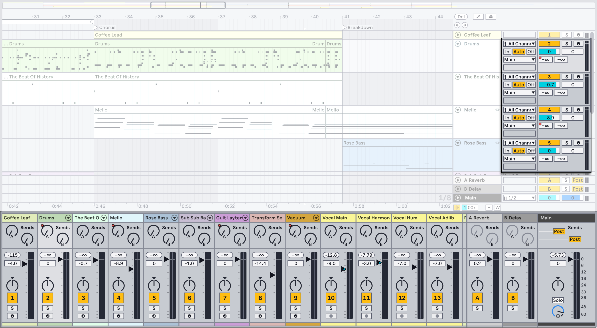
The mixer can be opened using the Mixer command in the View menu or the shortcut CtrlAltM (Win) / CmdOptionM (Mac). You can also show/hide the mixer using the mixer view control in the bottom right corner of Live’s window.
You can customize which controls are available in the mixer via the Mixer Controls submenu in the View menu.
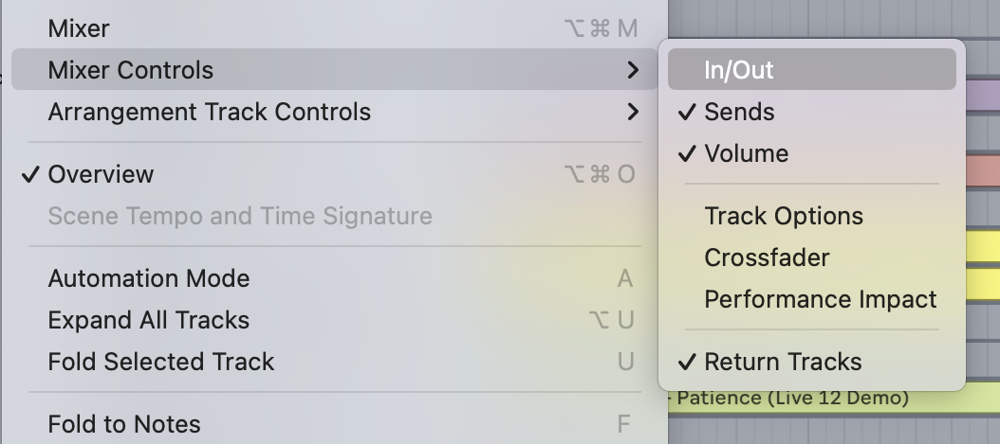
The View menu also contains a submenu for showing/hiding the various Arrangement track controls.
Values and settings are shared between the mixer and Arrangement track controls, so you can use either to adjust tracks. Note that some controls are only available in the mixer, such as the Performance Impact indicators, track delays and crossfader.